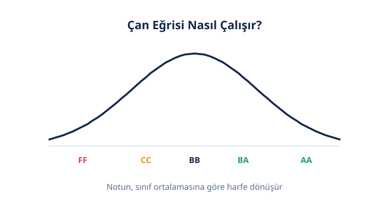

📝 Üniversite Notları
Harf Notu Hesaplama
Harf notu, 100'lük ham notunun üniversitenin belirlediği aralık tablosundaki karşılığıdır: yaygın aralıkta 84 puan BB, 92 puan AA olur. Notunu yaz, okulunun bantlarına göre harfini anında öğren.
Son güncelleme: 18 Ekim 2026 · Yazan: PuanRobotu Editör Ekibi
Harf Notu Hesaplama Aracı
Alt Sınırları Düzenle
Seçili örneğin aralıklarını kendi okuluna göre değiştirebilirsin.
Öne Çıkanlar
- Harf notu = 100'lük notunun, üniversitenin aralık tablosundaki karşılığıdır. Ulusal tek tablo yoktur; aralıkları her üniversitenin senatosu belirler.
- Neredeyse tüm okullarda ortak çekirdek: AA=90+, BA=85–89, BB=80–84. Farklılık alt harflerde başlar.
- 62 puan bir üniversitede CC, başkasında DD olur — bu sayfadaki 5 gerçek üniversite presetini karşılaştır.
- 84,9 ile 85,0 arasındaki 0,1 puan harfi değiştirir; yuvarlama politikasını hocana sor.
- Çan eğrisi uygulanan derste harf, ham notun değil sınıf içindeki konumunun karşılığıdır.
Harf Notu Nedir?
Harf notu, 100'lük ham başarı notunun AA'dan FF'ye uzanan sembolik ölçeğe çevrilmiş hâlidir. Her harfin 4,00'lük sistemde bir katsayı karşılığı vardır (AA=4,00 … FF=0,00) ve GANO bu katsayılarla hesaplanır.
Harf notu iki işlev görür: dersi geçip geçmediğini gösterir ve not ortalamana katsayı olarak girer. Bu yüzden 84 ile 85 arasındaki 1 puanlık fark, BB (3,00) ile BA (3,50) arasındaki 0,50 katsayı farkı demektir.
Kritik nokta: harf aralıkları ulusal değildir. Aynı 100'lük not, iki üniversitede iki farklı harf verebilir — aşağıdaki karşılaştırma tablosu bunu sayıyla gösterir.
Bu Hesaplayıcı Nasıl Çalışır?
Notunu seçili aralık tablosundaki alt sınırlarla karşılaştırır; notunun sağladığı en yüksek aralığın harfini verir. Mantık: 84 için "84 ≥ 90 mı? Hayır. 84 ≥ 85 mi? Hayır. 84 ≥ 80 mi? Evet → BB."

Beş hazır preset vardır: Yaygın Örnek, Kent Üniversitesi, GTÜ, İstanbul Aydın Üniversitesi, Sakarya Üniversitesi. Hepsi gerçek üniversite aralıklarıdır. Okulun listede yoksa alt sınırları elle düzenleyebilirsin.
Bu araç mutlak değerlendirme ile çalışır: harf yalnızca notuna bağlıdır, sınıfın durumuna değil. Çan eğrisi uygulanan derslerde harf sınıf dağılımına göre belirlenir — onun için Çan Eğrisi Hesaplama sayfasını kullan.
Formül ve Çalışılmış Örnek
Yaygın aralık seçiliyken 84 puan BB, 92 puan AA olur. Adım adım:

- 84 ≥ 90? Hayır → AA değil.
- 84 ≥ 85? Hayır → BA değil.
- 84 ≥ 80? Evet → harf notun BB.
- 92 ≥ 90? Evet → harf notun AA.
Tamamlanmış bir başka örnek: 72 puan, yaygın aralıkta CC olur (70–74); Kent Üniversitesi aralığında CB olur (70–79). Aynı puan, iki okulda iki harf — işte bu yüzden preset seçimi kritiktir. Bu örnekleri yukarıdaki araca girerek doğrulayabilirsin.
Hesaplayıcı Nasıl Kullanılır?
- Notunu yaz. 0–100 arası ham başarı notunu gir (ondalık girebilirsin).
- Aralık presetini seç. Okuluna en yakın üniversite örneğini seç; listede yoksa "Yaygın Örnek" ile başla.
- Gerekirse alt sınırları düzenle. Her harfin alt sınırını okulunun senato kararındaki değere göre değiştirebilirsin.
- Harfi oku. Sonuç kutusu harfi ve hangi aralığa denk geldiğini gösterir.
Sonucunu Nasıl Okursun?
Harfin, seçili aralığa göre 100'lük karşılığını ve GANO katsayını aşağıdaki üçlü tablodan okursun. (Yaygın örnek aralık.)
| 100'lük Aralık | Harf | Katsayı | Durum |
|---|---|---|---|
| 90 – 100 | AA | 4,00 | Geçti |
| 85 – 89 | BA | 3,50 | Geçti |
| 80 – 84 | BB | 3,00 | Geçti |
| 75 – 79 | CB | 2,50 | Geçti |
| 70 – 74 | CC | 2,00 | Geçti |
| 65 – 69 | DC | 1,50 | Şartlı* |
| 60 – 64 | DD | 1,00 | Şartlı* |
| 50 – 59 | FD | 0,50 | Kaldı |
| 0 – 49 | FF | 0,00 | Kaldı |
*Şartlı: DC/DD, GANO 2,00 ve üzeriyse geçer sayılır; altındaysa kalmaya döner (okula göre değişir).
Hangi Üniversite Hangi Bantları Kullanıyor?
Alt harf bantları üniversiteden üniversiteye değişir; üst üç harf (AA/BA/BB) neredeyse her yerde aynıdır. Bu sayfadaki beş gerçek preset yan yana:
| Harf | Yaygın | Kent Üni. | GTÜ | İst. Aydın | Sakarya |
|---|---|---|---|---|---|
| AA | 90 | 90 | 90 | 90 | 90 |
| BA | 85 | 85 | 85 | 85 | 85 |
| BB | 80 | 80 | 80 | 80 | 80 |
| CB | 75 | 70 | 75 | 75 | 75 |
| CC | 70 | 60 | 70 | 70 | 65 |
| DC | 65 | 55 | 65 | 60 | 58 |
| DD | 60 | 50 | 60 | 50 | 50 |
| FD | 50 | — | 50 | 40 | — |
Tabloyu oku: 62 puan Yaygın/GTÜ'de DD, Kent'te CC, İstanbul Aydın'da DC olur. Hiçbir rakip sayfa bu karşılaştırmayı yapmaz; çoğu tek tabloyu evrenselmiş gibi sunar (biri CC'yi 60–65 yazar — yanlış).
Sınır Değerler: 84,9 ile 85,0 Arasındaki 0,1 Puan
Sınırda 0,1 puan bile harfi değiştirir: 84,9 BB'dir, 85,0 BA'dir. Bu 0,50 katsayı farkı demektir.
Üç pratik sonuç çıkar:
- Yuvarlama politikasını öğren. Bazı hocalar 84,5'i 85'e yuvarlar, bazıları yuvarlamaz. Kural ders izlencesinde yazar.
- 84–86 bandındaysan 1 puan için itiraz etmeye değer. Sınav kâğıdındaki 1 puanlık hata, BA ile BB arasındaki farktır.
- Hedefini sınırın 1–2 puan üstüne koy. BA istiyorsan 85'i değil 87'yi hedefle; güven payı bırak.
Özel Harfler ve Koşullu Geçme
AA–FF dışındaki harfler dersin durumunu anlatır; çoğu GANO'ya girmez.
- FD: Başarısız ama FF'ten hafif; katsayısı 0,50'dir. Bazı okullarda bütünleme hakkı tanır.
- G (Geçer) / K (Kalır): Kredisiz derslerde kullanılır; GANO'yu etkilemez.
- W (Çekilme): Dersten çekilme; transkriptte görünür, ortalamaya girmez.
- I (Eksik) / MZ (Mazeret): Tamamlanmamış değerlendirme; süre dolunca harfe dönüşür.
Koşullu geçme: DC/DD notları, GANO 2,00 ve üzeriyse "geçti" sayılır; 2,00'nin altındaysa bu dersler kalmaya döner ve tekrarlanmalıdır. Transkriptte harf aynı kalır, durumu GANO belirler.
Sınırlamalar
Bu araç seçili aralığa göre matematiksel olarak doğru harfi verir; ama üç önemli sınırı vardır.
- Aralık senato kararıdır. Okulunun güncel bantlarını öğrenci işlerinden teyit et; bu sayfadaki presetler örnektir.
- Çan eğrisi derslerinde geçersizdir. Bağıl değerlendirmede harf, sınıf dağılımına göre belirlenir — Çan Eğrisi Hesaplama sayfasını kullan.
- AÖF'de geçersizdir. Açıköğretimde harf, 35 barajı sonrası bağıl değerlendirmeyle belirlenir — AÖF Not Hesaplama sayfasına bak.
Mutlak Değerlendirme vs Çan Eğrisi
İki sistemin farkı, harfin neye göre belirlendiğidir: sabit tabloya mı, sınıfa mı?
| Mutlak | Bağıl (Çan Eğrisi) | |
|---|---|---|
| Harf neye göre? | Sabit aralık tablosu | Sınıf ortalaması ve dağılımı (z/T) |
| 84 puan | Her zaman BB (yaygın) | Sınıfa göre AA da olur CC de |
| Öngörülebilirlik | Yüksek: hedefi baştan bilirsin | Düşük: sınıfı beklemen gerekir |
| Doğru araç | Bu sayfa | Çan Eğrisi Hesaplama |
İpuçları
- Okulunun gerçek harf aralıklarını dönem başında öğrenci işlerinden ya da ders izlencesinden öğren.
- Hedef harfini erken belirle: BB istiyorsan 80 barajını, BA istiyorsan 85 barajını kovala.
- Çan eğrisi olan derste mutlak nota değil, sınıf içindeki konumuna odaklan.
- Tüm derslerinin harfleriyle genel ortalaman için GANO Hesaplama aracını kullan.

Sık Sorulan Sorular
100'lük not harf notuna nasıl çevrilir?
Notun, üniversitenin belirlediği aralıklara göre harfe denk gelir. AA=90+, BA=85–89, BB=80–84 çekirdeği neredeyse her okulda aynıdır; alt harflerde aralıklar değişir. Bu araçta 5 gerçek üniversite preseti hazırdır.
Harf aralıkları neden üniversiteden üniversiteye değişiyor?
Çünkü aralıkları her üniversitenin senatosu belirler; ulusal tek bir tablo yoktur. Örneğin 62 puan Yaygın aralıkta DD, Kent Üniversitesi'nde CC olur. Okulunun güncel aralıklarını öğrenci işlerinden teyit et.
Hangi üniversite hangi bantları kullanıyor?
Tek tip yok: bu sayfadaki karşılaştırma tablosunda Yaygın, Kent, GTÜ, İstanbul Aydın ve Sakarya presetleri yan yana. Üst üç harf (AA/BA/BB) her yerde aynıdır; fark alt harflerdedir.
84,5 notum BA mı BB mi olur?
Seçili aralığa bağlı: yaygın örnekte 85 altı BB'dir, yani 84,5 BB olur. Bazı okullar buçuğu yukarı yuvarlar; kesin bilgi için hocana ya da öğrenci işlerine sor.
76 puan hangi harfe denk gelir?
Aralığa göre değişir: yaygın aralıkta 76 puan CB'dir (75–79); Kent Üniversitesi aralığında da CB'dir (70–79). Ama 72 puan yaygında CC, Kent'te CB olur — preset seçimi bu yüzden kritiktir.
FD ile FF arasındaki fark nedir?
İkisi de başarısız sayılır; ancak FD'nin katsayısı 0,50'dir ve bazı okullarda bütünleme hakkı tanır ya da ortalamayı FF kadar düşürmez. Okulunun yönetmeliğindeki karşılığına bak.
DC ve DD ile ders geçilir mi?
Koşullu geçme: GANO'n 2,00 ve üzeriyse DC/DD geçer sayılır; 2,00'nin altındaysa bu dersler kalmaya döner ve tekrarlanmalıdır. Uygulama okula göre değişir.
W (çekilme) notu ortalamayı etkiler mi?
Hayır. W, dersten çekildiğini gösterir; transkriptte görünür ama GANO paydayasına girmez. Aynı şekilde MU, G ve İZ notları da ortalamayı etkilemez.
Çan eğrisi uygulanan derste bu araç işe yarar mı?
Ham 100'lük notunu harfe çevirmek için evet; ama çan eğrisinde harf, sınıfın dağılımına göre belirlenir. Onun için Çan Eğrisi Hesaplama aracını kullan.
Girdiğim not bir yere gönderiliyor mu?
Hayır. Tüm hesaplama tarayıcında yapılır; notun hiçbir sunucuya gönderilmez ve saklanmaz.